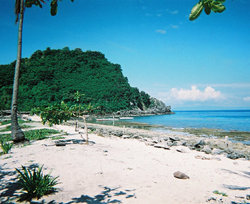
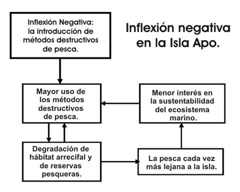
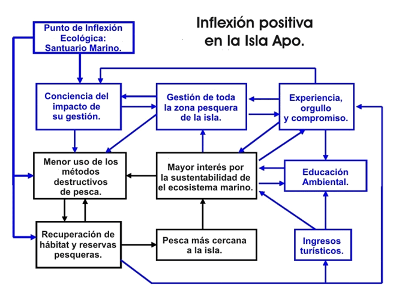

|
 |
 |
Puntos de
Inflexión Ecológica
- Cómo funcionan?
- Transformando círculos viciosos a círculos virtuosos
- Ingredientes para el éxito
- Elaboren sus propios Puntos de Inflexión Ecológica
Historias por Región
Historias por Tema
- Agricultura
- Agua y Cuencas
- Bosques
- Ecosistemas Urbanos
- Educación
- Energía
- Negocios
- Pesquerías
- Salud Pública
Videos Cortos
- Salvando un arrecife coral y una pesquería
(Filipinas) - Revitalizando vecindades urbanas con jardines comunitarios
(Nueva York) - Revirtiendo la deforestación tropical con bosques comunitarios
(Thailandia) - Rellenando aguas subterráneas con captación pluvial
(Rajastán, India) - Escapando la trampa de pesticidas
(India)
Explicando el Éxito
- Salvando un arrecife coral y una pesquería
(Filipinas) - Revitalizando vecindades urbanas con jardines comunitarios
(Nueva York) - Revirtiendo la deforestación tropical con bosques comunitarios
(Thailandia) - Rellenando aguas subterráneas con captación pluvial
(Rajastán, India) - Escapando la trampa de pesticidas
(India)

Ecología Humana: Presenta los principios de la ecología humana que sirven de fundamento a los Puntos de Inflexión Ecológica
Puntos de Inflexión Ecológica: Compartiendo éxitos ambientales con estudiantes
- Autores: Gerald Marten y Catherine Matthews
- Este artículo fue publicado en The Science Teacher 76(7):43-48 (Octubre 2009)
Al contrario de lo que comúnmente escuchamos y enseñamos, hay buenas noticias en el ámbito ambiental. Las historias de éxitos ambientales nos demuestran no solo que la sustentabilidad es posible, sino como se ha logrado. Podemos hacer accesibles estas historias, y sus lecciones, a estudiantes a través del Proyecto Puntos de Inflexión Ecológica, el cual ha recopilado éxitos ambientales de todo el mundo.
La historia de la Isla Apo
Un gran ejemplo de un éxito ambiental nos llega de la Isla Apo, una pequeña comunidad pesquera en las Filipinas – un paraíso tropical de arrecifes y playas de arena (Figura 1). La pesquería arrecifal de las costas Filipinas es una de las más grandes del mundo, pero también enfrenta serias dificultades. Están desapareciendo aldeas pesqueras porque los pescadores no logran capturar más de uno o dos peces en todo el día. La isla Apo estuvo cerca de compartir el mismo destino, pero en cambio sus pescadores descubrieron como salvar su pesquería y su forma de vida (Marten 2005).
El problema comenzó en la década de 1950 con la introducción de métodos destructivos de pesca, tales como el uso de dinamita y cianuro – técnicas muy eficaces pero poco sustentables. La pesquería cayó en un círculo vicioso de daños al hábitat coralino, disminución de reservas pesqueras, y mayor necesidad de métodos destructivos para lograr pescar lo poco que quedaba. Los pescadores de la isla Apo, como tantos otros, tenían que viajar cada vez más lejos de su isla y trabajar largas horas en busca de zonas que aun tenían peces, y luego utilizar métodos destructivos para maximizar su pesca, ignorando la salud futura de la pesquería. El gobierno nacional prohibió los métodos destructivos de pesca, pero no pudo hacer cumplir la ley.
Parecía imposible escapar de esta espiral descendiente, pero en 1980 Ángel Álcala, un científico marino de la cercana Universidad Silliman, comenzó un diálogo de dos años con los pescadores de Apo, en busca de soluciones. Platicaron todo lo que sucedía con el ecosistema arrecifal que rodea a la isla en una franja de hasta 500 metros de la orilla, y que hacer al respecto. Álcala llevo a algunos pescadores a visitar una isla deshabitada, donde había protegido de la pesca a un parche de arrecife durante varios años. El número de peces en el área protegida era impresionante, y los peces del área protegida repoblaban a las zonas aledañas.
En 1982, los isleños de Apo decidieron intentar algo similar. Designaron 450 metros de su costa – el 10% de la zona pesquera alrededor de la isla – como una zona de veda y santuario marino (Figura 2). Fue sencillo hacer respetar la decisión, tan solo se necesitó de un vigilante en la playa, tarea rotada entre las familias de la isla.
Nadie sabía con certeza que tan bien funcionaría su plan. Sin embargo, tres años después el santuario estaba repleto de peces. La pesca a orillas del mismo era mucho mejor que antes. Esto inspiró a los pescadores a proteger el resto de su zona pesquera con dos reglas:
- La pesca alrededor de la Isla Apo sería exclusiva de los residentes de la isla.
- Se prohibieron los métodos destructivos de pesca.
Se formó una “guardia marina” de voluntarios para hacer cumplir las reglas.
Al momento no había precedente alguno para que una aldea asumiera tal autoridad, pero con ayuda de una asociación civil regional, el consejo de Apo negoció los permisos necesarios por parte del gobierno para implementar y hacer valer estas reglas. La pesquería se recuperó velozmente, aunque las reservas de peces mayores tardaron hasta 10 años en recuperarse plenamente. Ahora los isleños de Apo pescan mas cerca de su isla, y en pocas horas pescan todo lo necesario. Lograron resolver su problema.
La restauración del ecosistema arrecifal en Apo detonó una serie de variantes que reforzaron la sustentabilidad. El turismo atrajo mayores ingresos y creó mayores incentivos para mantener sano el ecosistema marino. La escuela primaria agregó cursos de ecología marina a su plan de estudios (Figura 3), y los isleños utilizaron parte de sus ingresos turísticos para generar becas para que sus hijos continúen sus estudios en tierra firme. Algunos estudiantes de Apo actualmente cursan el posgrado en gestión de ecosistemas marinos. Además, visitantes de otras aldeas pesqueras han venido a conocer el ejemplo de Apo y actualmente 700 aldeas de las Filipinas ya tienen santuarios marinos.
Puntos de Inflexión Ecológica
Muchas veces los problemas ambientales son de complejidad abrumadora, y son impulsados por poderosas fuerzas sociales y ecológicas. En ocasiones parece inútil la lucha a favor de cambios positivos. El número de problemas ambientales que urgen de nuestra atención es demasiado grande; pero enfocarse en lo negativo puede llevar a la parálisis, tanto para estudiantes como maestros. Es importante exponer a los estudiantes a casos exitosos, ya que las lecciones que nos ofrecen pueden ayudarnos a cambiar nuestra manera de pensar, y de enseñar, en soluciones a problemáticas ambientales. Además, motivan a estudiantes a aprender importantes conceptos ambientales, y les inspiran a tomar acción.
El Proyecto Puntos de Inflexión Ecológica ha recopilado historias exitosas de alrededor del mundo. Al igual que el ejemplo de la Isla Apo, estas historias resaltan a comunidades que han revertido la degradación ambiental, creando alternativas sustentables. En cada caso, existe una palanca que detona los procesos que llevan al éxito.
El concepto de estas palancas – pequeñas acciones de gran consecuencia – puede ser muy emocionante. En su libro The Tipping Point, Gladwell (2000) argumenta que la ciudad de Nueva York se transformó de una ciudad violenta e insegura donde la gente evitaba salir a la calle en los años 1970s, a una metrópolis activa, próspera y segura en los 1990s. Gladwell implica que esta dramática transformación se debió a cambios menores – o palancas – tales como recubrir el graffiti, reemplazar ventanas rotas, y arrestar a individuos por infracciones menores como son no pagar la cuota del metro. En nuestras historias llamamos a tales palancas “Puntos de Inflexión Ecológica”, porque redirigen el deterioro ambiental hacia la restauración y sustentabilidad. El santuario marino en la Isla Apo fue la palanca que detonó los cambios. Fue el Punto de Inflexión Ecológica.
Lecciones de las Historias de Puntos de Inflexión Ecológica
El sitio web de Puntos de Inflexión Ecológica ofrece una variedad de historias sobre comunidades que enfrentan una amplia gama de problemas ambientales (www.ecoinflexiones.org). La Figura 3 describe 5 de las casi 100 historias disponibles a través del sitio. Cada caso demuestra la misma estructura básica de la Isla Apo, una historia marcada por dos dramáticos cambios:
- La inflexión negativa: una trayectoria de deterioro impulsada por círculos viciosos interdependientes y mutuamente reforzadores (Figura 4); y
- La inflexión positiva: el curso de la restauración y sustentabilidad (Figura 5).
La palanca para la inflexión positiva, o el Punto de Inflexión Ecológica, típicamente combina una eco-tecnología apropiada – es decir, la aplicación práctica de conocimientos tradicionales y ciencia moderna sustentable – con la organización social necesaria para poner en práctica dicha eco-tecnología. La eco-tecnología puede ser de varios tipos, como el santuario marino de la Isla Apo o los ejemplos de la Figura 3.
Los Puntos de Inflexión Ecológica son catalíticos y generan una cascada de cambios. Pero el deterioro típicamente es impulsado por circuitos de retroalimentación (círculos viciosos) que se refuerzan entre sí y que pueden ser muy fuertes. La Figura 4 demuestra como la disminución en reservas pesqueras obligó a los pescadores de Apo a incrementar su uso de métodos destructivos de pesca y a viajar cada vez más lejos de su isla, contribuyendo al deterioro de las reservas pesqueras de toda la región. El deterioro fue revertido únicamente cuando se revirtieron los círculos viciosos.
Revertir los círculos viciosos no es fácil, pero es la única manera de impulsar la restauración. Una vez revertidos los círculos viciosos, se convierten en círculos “virtuosos” (es decir, deseables) con los mismos circuitos de retroalimentación que funcionan con la misma fuerza pero a favor de la restauración. La Figura 5 demuestra como al incrementar gradualmente las reservas pesqueras alrededor de la Isla Apo, los pescadores pudieron pescar más cerca de su casa, reduciendo la necesidad de viajar lejos y de pescar destructivamente. Las reservas aumentaron en toda la región, reforzando los procesos circulares. Al mismo tiempo, aparecieron nuevos círculos virtuosos de orgullo, experiencia, compromiso, ingresos turísticos y educación, acelerando el proceso, acumulándo logros y asegurando los mismos.
¿Qué se necesita para revertir círculos viciosos? Los mismos ingredientes del éxito que en la Isla Apo se encuentran en nuestros otros casos.
Utilizando las historias de Puntos de Inflexión Ecológica en el salón de clases
Cuando los maestros proporcionan un marco analítico que demuestra como se generan los problemas ambientales y como puede enfrentárseles, y al mismo tiempo festeja los éxitos y brinda esperanzas, los estudiantes estarán mejor equipados y motivados para buscar soluciones. El modelo Puntos de Inflexión Ecológica es fácilmente adaptado a cualquier nivel educativo y cumple con varios de los ejes temáticos estándares de la National Science Foundation, entre estos: la interdependencia de organismos; salud personal y comunitaria; la ciencia y tecnología aplicadas a problemas locales, nacionales y globales; recursos naturales; calidad ambiental; la ciencia como empresa humana; y perspectivas históricas (NRC 1996).
Los principios básicos de las interacciones entre humanos y ecosistemas que son el fundamento de los Puntos de Inflexión Ecológica son explicados en Marten (2001). También hemos desarrollado recursos específicos para estudiantes de bachillerato, así como adultos, y estos materiales han sido modificados para estudiantes menores.
Por ejemplo, los casos de estudio del sitio web de Puntos de Inflexión Ecológica pueden ser usados por estudiantes de bachillerato en sus clases de ciencias ambientales y biología, particularmente durante las unidades de ecología. Dado que el marco conceptual se enfoca en las interacciones entre los humanos y su medio ambiente como catalizadores de cambios sociales e históricos, los casos también pueden ser un gran recurso para maestros de ciencias sociales que enseñan historia mundial, u otras clases con un enfoque en el mundo contemporáneo. Y estos maestros pueden coordinarse con sus colegas para integrar sus lecciones.
En el sitio web, Julie Marten, una maestra de ciencias sociales en la escuela Woodside High School en California, ofrece planes de estudios de dos días a detalle. En esta lección, ocho grupos presentan sumarios de casos de estudios de la India (agua y biocombustibles), China (silvicultura), Alemania (energía), Brasil (diseño urbano), Sudáfrica (gestión de cuencas), los Estados Unidos (desechos tóxicos) y Fiji (reservas marinas). Los estudiantes responden a una serie de interrogantes y simulan participar en una conferencia ambiental en la que abogan por fondos para resolver la problemática ambiental presentada en cada caso. Cada uno de los ocho casos puede descargarse gratuitamente del sitio web, junto con un video en que Marten describe como presenta los materiales a sus estudiantes de bachillerato.
Enseñando los conceptos de Puntos de Inflexión Ecológica
Deborah Trogdon-Stout, maestra de ciencias ambientales de la escuela Trinity High School en Carolina del Norte, utiliza el marco de Puntos de Inflexión Ecológica como la base para todo un curso. Trogdon-Stout comienza su curso con tres semanas que dependen fuertemente de materiales en el sitio web. Enseña varias tipos de clases de ciencias ambientales a varios niveles, incluso uno para estudiantes avanzados. Sus estudiantes avanzados logran buenos resultados en su examen final de estudios avanzados, que típicamente requiere de un ensayo sobre las prácticas de alguna polémica ambiental, como la minería.
Jenga, un juego de mesa comercial, es utilizado para introducir el concepto de punto de inflexión. Los estudiantes utilizan una versión con bloques de tres colores que representan tres factores necesarios para sustentar la vida: el rojo es la comida, el azul el agua, y el amarillo representa cobijo. Tras construir una torre, los estudiantes tiran el dado y toman turnos removiendo bloques del color indicado y registrando cada uno hasta que la torre se desploma. El objetivo es identificar cual factor causo el colapso del ecosistema.
Tras cuatro pruebas, se agrega un factor – un huevo (la mayoría de los huevos se hierven entre 1 y 20 minutos, dejando uno completamente crudo). Los huevos representan especies frágiles en el ecosistema. Cuando el sistema se desploma, los estudiantes de nuevo buscan el factor (color del bloque) cuya remoción causó el colapso del ecosistema. De esta simulación los estudiantes obtienen datos y grafican las particularidades de cada sistema. Con los huevos los estudiantes debaten el estado de conservación de varias especies y porqué algunas son más susceptibles a cambios que otras. Los estudiantes desarrollan perspectivas sobre como pudo evitarse el colapso del ecosistema y como puede restaurarse el mismo.
Tras estas actividades introductorias, los estudiantes leen un caso sobre el lago Victoria donde la Perca del Nilo fue introducida con consecuencias devastadoras para la tilapia nativa y para la forma de vida de los nativos lugareños. El examen final del curso requiere la lectura de un artículo de 23 páginas sobre varios casos de estudio de Puntos de Inflexión Ecológica. Después escriben un ensayo explicando si creen o no que la raza humana representa un punto de inflexión para el planeta.
Utilizando diagramas para ilustrar conexiones
Los diagramas pueden ayudar a los estudiantes a pensar sobre el deterioro y restauración de sistemas en términos de circuitos de retroalimentación. Primero se les dice (o leen) sobre la “inflexión negativa” de una historia de Punto de Inflexión Ecológica. Inmediatamente después, se les da un diagrama como el de la Figura 4, con cuadros y etiquetas pero sin las flechas. En pequeños grupos, los estudiantes trazan las flechas sobre el diagrama al recordar las conexiones de la historia y escriben la dirección del cambio (en aumento o descenso) para cada cuadro. Los estudiantes entonces escuchan (o leen) sobre la “inflexión positiva” en la historia y trazan las flechas en una segunda figura (Figura 5). Los estudiantes comparan su “inflexión negativa” e “inflexión positiva” para descubrir que
- una porción del diagrama de la “inflexión positiva” es idéntica al diagrama de la “inflexión negativa”, con excepción de los cambios en dirección (es decir, la transformación de círculos viciosos en círculos virtuosos); y
- la otra parte del diagrama de la “inflexión positiva” son los nuevos círculos virtuosos creados por la palanca de Punto de Inflexión Ecológica.
De manera similar, a los estudiantes puede asignárseles sus propios casos de estudio, los cuales presentarán a sus compañeros utilizando diagramas de circuitos de retroalimentación e identificando los puntos de inflexión. También pueden preparar diagramas de “inflexión negativa” para problemas en su propia comunidad – tales como aquellos relacionados a la calidad del aire, del agua, contaminación sonora, pérdida de áreas verdes, escasez de agua, abasto de alimentos, manejo de residuos, emisión de gases invernadero, la disminución en poblaciones de anfibios sensibles a la polución u otros animales silvestres, y muchos otros temas. Un diagrama completo típicamente contiene entre 4 y 10 cuadros. Los estudiantes pueden examinar sus diagramas de inflexión negativa para identificar circuitos de retroalimentación que impulsan el deterioro y pensar en intervenciones que podrían revertir los cambios en una o más partes del diagrama con suficiente fuerza para revertir el sistema entero de círculos viciosos.
Conclusión
Lidiar efectivamente con problemas ambientales cuesta mucho trabajo, independientemente de cómo se haga. Pero en un mundo con recursos limitados, el marco conceptual de Puntos de Inflexión Ecológica – basado en apalancar los poderes auto-organizadores de la sociedad humana y de los ecosistemas para el saneamiento de los mismos – nos ofrece esperanza y un nuevo enfoque para contemplar tanto problemas como soluciones. Este marco conceptual puede involucrar a estudiantes, mejorar su habilidad para descubrir conexiones, y ayudarles a desarrollar habilidades analíticas. Aun más importante es que brinda a estudiantes la oportunidad de observar profundamente los problemas ambientales alrededor del mundo, y en su comunidad.
Agradecimientos: Los autores desean agradecer a las maestras Julie Marten y Debbie Trogdon-Stout por su apoyo con este artículo, pero particularmente por usar los Puntos de Inflexión Ecológica en sus clases.
Gerald Marten (marteng@eastwestcenter.org) es ecólogo del East-West Center en Honolulu, Hawaii; Catherine Matthews (cmatthews@uncg.edu) es profesora de pedagogía de ciencias ambientales y educación ambiental con la University of North Carolina in Greensboro;.
En la Red
- Sitio web (en inglés) EcoTipping Points Project: www.ecotippingpoints.org
- Sitio web (en español) Proyecto Puntos de Inflexión Ecológica: www.ecoinflexiones.org
- Ingredientes del éxito en casos de estudio Puntos de Inflexión: www.ecotippingpoints.org/articles/ingredients.html
- Lecciones de Julie Marten (video y materiales didácticos): www.ecotippingpoints.org/articles/julie-marten.html
- Curso de Ciencias Ambientales de Deborah Trogdon-Stout: www.ecotippingpoints.org/articles/deborah-trogdon-stout.html
- La inflexión negativa del lago Victoria: www.ecoinflexiones.org/recursos/pub-environmental-aikido.html
- Utilizando diagramas para enseñar los Puntos de Inflexión Ecológica: www.ecotippingpoints.org/articles/feedback-diagrams.html
- Revertiendo la deforestación en Tailandia: www.ecoinflexiones.org/historias/detallados/thailandia-agrosilvicultura-gestion.html
NSTA Connections
- NSTA Science Object: Ecosystems in Crisis:
Bibliografía
- Gladwell, M. 2000. The tipping point: How little things can make a big difference. Boston: Little, Brown.
- Marten, G.G. 2001. Human ecology: Basic concepts for sustainable development. London, UK: Earthscan Publications. Online en español: www.gerrymarten.com/ecologia-humana/indice.html
- Marten, G.G. 2005. Environmental tipping points: A new paradigm for restoring ecological security. Journal of Policy Studies (Japan) 20: 75–88. Online en español: www.ecoinflexiones.org/recursos/pub-policy-studies.html
- Marten, G.G., S. Brooks, and A. Suutari. 2005. Environmental tipping points: A new slant on strategic environmentalism. WorldWatch Magazine 18 (6): 10–14. Online en español: www.ecoinflexiones.org/recursos/pub-world-watch.html
- Marten, G.G., and D.G. Williams. 2006. Getting clean: Recovering from pesticide addiction. The Ecologist 36 (10): 50–53. Online en español: www.ecoinflexiones.org/recursos/pub-the-ecologist.html
- National Research Council (NRC). 1996. National science education standards. Washington, DC: National Academy Press.
- Suutari, A., and G.G. Marten. 2007. EcoTipping Points: How a vicious cycle can become virtuous. Earth Island Journal 22 (2): 26–31. Online en español: www.ecoinflexiones.org/recursos/pub-earth-island.html

Figura 1: Pescador de la Isla Apo en su canoa.

Figura 2: Santuario marino de la Isla Apo.
Figura 3: Casos de estudio en el sitio web de Puntos de Inflexión Ecológica.
Caso de estudio 1: La agrosilvicultura y gestión comunitaria de bosques en Tailandia revirtieron un círculo vicioso de deforestación, degradación de cuenca, costosos insumos agrícolas, deuda y migraciones, al restaurar los bosques y la integridad ecológica de la cuenca. Así se aseguró el nivel de vida con una agricultura sustentable. Dado que la deforestación tropical es responsable de un 30% de las emisiones globales de dióxido de carbono, este caso nos demuestra una importante manera de mitigar el cambio climático.
[www.ecoinflexiones.org/historias/detallados/thailandia-agrosilvicultura-gestion.html]
Caso de estudio 2: La “Gestión sin Pesticidas” por parte de agricultores de algodón en la India utilizó métodos ecológicos de control de plagas para revertir un círculo vicioso de resistencia a pesticidas, mayor dependencia sobre los mismos, envenenamientos debido a ello, deuda y el mayor índice de suicidios en la India. Esta tecnología ecológica se ha implementado a lo largo de la provincia de Andhra Pradesh, restaurando la economía y salud familiar junto con la de las aves e insectos que naturalmente controlan las plagas (Marten and Williams 2006)
[www.ecoinflexiones.org/recursos/pub-the-ecologist.html].
Caso de estudio 3: Las represas tradicionales para captación pluvial en la India revirtieron un círculo vicioso de acuíferos agotados, pozos y ríos secos, escasez de leña, deterioro agrícola y migraciones en un área del tamaño de Delaware. Esta tecnología tradicional se ha replicado en 800 aldeas resultando en el regreso del agua, árboles, animales silvestres y una vida más sana para la población humana (Marten et al. 2005)
[www.ecoinflexiones.org/recursos/pub-world-watch.html].
Caso de estudio 4: Las hortalizas comunitarias de la “Guerrilla Verde” de la ciudad de Nueva York revirtió un círculo vicioso de deterioro urbano, crimen, lotes baldíos, negligencia y migraciones y resultó en alimentos, flores y hábitat para animales silvestres. Estas hortalizas nutrieron cuerpo y alma de 800 barrios e inspiraron la adopción de hortalizas comunitarias en todo el país (Marten et al. 2005)
[www.ecoinflexiones.org/recursos/pub-world-watch.html].
Caso de estudio 5: Un humedal artificial en Arcata, California procesa aguas negras a bajo costo y brinda hábitat de primera calida para la fauna silvestre, así como oportunidades de recreo al aire libre para la población urbana. La expansión de humedales artificiales a poblaciones aledañas ha cambiado la cara del desarrollo urbano una forma que podría mitigar la dispersión urbana (Suutari y Marten 2007)
[www.ecoinflexiones.org/recursos/pub-earth-island.html].

Figura 4. Inflexión Negativa
Dos círculos viciosos interconectados y reforzadores impulsan el deterioro de la pesquería arrecifal en las Filipinas. Uno es una espiral de disminución de poblaciones de peces y más pesca destructiva, y el otro es la necesidad de pescar cada vez más lejos, donde no importa ser sustentable.

Figura 5. Inflexión Positiva
Los círculos virtuosos que impulsaron la pesquería arrecifal de la Isla Apo hacia la restauración y sustentabilidad. En negro, los círculos viciosos transformados en círculos virtuosos por el Punto de Inflexión Ecológica. En azul, nuevos círculos virtuosos creados por el Punto de Inflexión Ecológica.
Este sitio web contiene materia traducida del sitio web www.ecotippingpoints.org.
Traducción: David Nuñez. Redacción: Gerry Marten